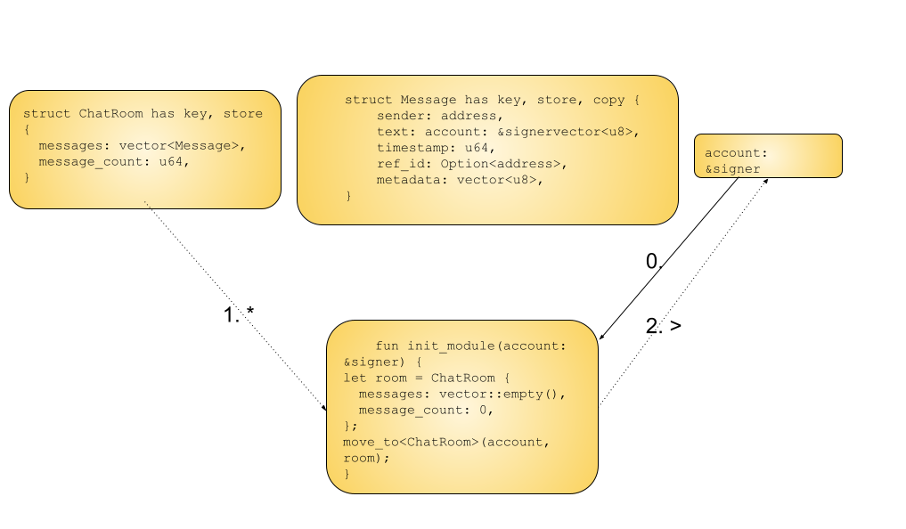

Movement Hack Introduction
This course is designed to support you as you build for build for Movement. See our docs for an introduction to the Move stack. And please join Movement Discord to get involved with the community!
Table of Contents
Feedback and Contributions
We hope you enjoy the course! Please send feedback and contributions via Discord or GitHub.
The History of Move
Welcome to the Movement! Because Move is a new language, we'll begin with a brief history. In this chapter you'll discover:
- Why the Move language was invented
- How Move came to be used on multiple blockchain networks
- What Movement Labs is doing to spread Move adoption
Introduction to Move: A Language Designed for Digital Assets
Get to know Move, a language specifically developed for handling digital assets effectively and safely.
What is Move?
Move is a language crafted by the Diem project team at Facebook in 2020. Its design mimics some principles from Rust, with a focus on enhancing the management of digital assets types on Blockchain technologies. With Move, the traditional security risks and inefficiencies associated with earlier languages are mitigated.

Characteristics of Move
Here are some key features that make Move a standout language:
- Resources Concept: Move emphasizes a resources paradigm where digital assets are seen as distinct items that can't be copied or misplaced.
- Move Prover: This is an in-built validation tool in Move. Its responsibility is to ensure that programs align with the rules declared and are free from errors. This boosts its security.
- BCS Bytecode Compilation: Programs written in Move are compiled into Binary Canonical Serialization (BCS) bytecode, a format that's both secure and efficient for different Blockchain applications.
- Flexibility and Scalability: Move supports a range of applications from simple transactions to complex financial commitments. It also allows developers to build reusable modules.
- Open Source: Move is open-source and governed by the community. This allows for adjustments and evolution to meet the changing trends in digital finance.
Conclusion
Move provides a solid framework for managing digital assets efficiently and securely. Its innovative characteristics and community-driven growth ensure that Move stays relevant in digital finance.
References
- The Language of Money, Part One: What Motivated the Creation of Move? Diem Blog: https://www.diem.com/en-us/blog/why-build-move/
The Dispersion of Move
This lesson will walk you through on the history and expansion of Move, a key smart contract language developed originally for the Diem project by Facebook, but now used across various blockchains.
The Origin: Facebook's Dream
Move was initially part of Facebook's ambitious project Libra, later renamed as Diem. It was developed to overcome the limitations of existing blockchain languages, especially in terms of security and digital asset management. Their intention was to create a globally accessible and efficient payment system.
The Journey Beyond Diem
Although Diem faced regulatory approval obstacles, the innovative capabilities of Move managed to capture the broader interest of the blockchain community. The principles and potential of Move were too significant to be restricted to just a single project.
The Dissemination: Aptos, Sui, and Further
Among the first to adopt Move for their platforms were Aptos and Sui, both initiated by ex-members of the Diem team.
Aptos: Aptos focused on refining Move to improve security features and asset handling capabilities, aiming for a user-friendly blockchain ecosystem.
Sui: Sui, targeting scalability and customizability, modified Move to support a new consensus mechanism and state management system, boosting speed and flexibility.
Other Initiatives: Platforms like Starcoin, 0L, and Celo have employed Move for their smart contracts. Other platforms like Solana are examining its integration.
Now Movement is working on interoperability of Move-EVM, among other innovations.
The Legacy: The Growing Ecosystem of Move
Present times sees Move not just as a programming language, but as an integral part of a growing ecosystem that extends across various blockchains. By addressing the sophisticated needs of digital asset management, Move has set a new standard in blockchain development, emphasizing safety, flexibility, and scalability.
Conclusion
The spread of Move from Diem to platforms like Aptos and Sui highlights the robust design of the language and the innovation drive of the blockchain community. The journey of Move, from a Facebook initiative to a cornerstone of blockchain technology, showcases how good ideas can surpass their origins and adapt to wider applications.
Getting Started with Movement
In this guide, you'll learn about the innovative network of modular Move-based blockchains developed by Movement Labs, designed to enhance security and interconnectivity in the blockchain world.
What is Movement Labs?
Movement was born from a simple idea: What If you could take advantage of the Move programming language within any distributed environment?
At Movement Labs, we've come together to share our passion for Move with the industry and make our favorite programming language available to as many people around the world as possible. By creating seamless standardization across infrastructures, we can unlock innovation for all.
This is about creating a world where crypto is not just a currency or a technology, it's about creating a movement that brings us all closer together.
Core Principles of Movement
-
Unified Ecosystem: Movement Labs merges diverse blockchain platforms under one infrastructure, eliminates barriers typically associated with silos, and fosters seamless collaboration and innovation. Our standardized interface streamlines interactions across platforms, making the blockchain ecosystem more approachable to both developers and users.
-
Accessibility and Inclusivity: Our goal is to make blockchain technology more democratic, user-friendly, and accessible to everyone. To achieve this, we created the Movement SDK that complements existing frameworks, such as the EthereumVM or EVM. This provides universal compatibility and easy integration, making adoption more effortless.
-
Interconnectivity for Open Innovation: Movement is structured to enhance connectivity among various platforms. This allows users to collaborate freely and take advantage of advancements from the broader blockchain spectrum, fostering a culture of joint innovation where ideas can grow and be implemented across different blockchains.
-
Future-proof and Community-driven: Movement evolves as blockchain technology progresses, ensuring all projects stay at the leading edge of innovation. At its core, Movement is powered by an active community of builders and innovators passionate about shaping the future of blockchain.
Building a Lasting Legacy
At Movement Labs, we're more than a technology provider. We're pioneers leading a movement with an aim to reconfigure the blockchain landscape. Our concentration on accessibility, interconnectivity, and community involvement isn't just about crafting products — it's about building a rich legacy that will leave a positive and lasting impact.
Check your knowledge and earn rewards
Join the Movement
If you haven't joined the Discord yet, do it now to stay in sync with all the next moves!
Getting Started with Move
This chapter gets you building with Move. You'll master:
Advantages of Move
In this lesson, you'll learn fundamental properties of Move, including resource-orientation and type linearity, and how Move addresses specific smart contract vulnerabilities.
Resource-orientation and the blockchain
Resource-orientation is a fundamental concept in programming languages like Move that greatly benefits the blockchain ecosystem. By aligning with the principles of resource-oriented programming, the blockchain can enhance security, efficiency, and reliability of smart contracts.
Stack Model Programming and Function Ownership
In resource-oriented programming, like Move, the stack model is employed to manage data ownership and control access. Take for example the following unsafe C program.
#include <stdio.h>
#include <stdlib.h>
#include <string.h>
void printAndFree(char* data) {
printf("Data: %s\n", data);
free(data); // Function takes ownership and frees the memory
}
int main() {
char* value = (char*)malloc(strlen("Hello") + 1);
strcpy(value, "Hello");
printAndFree(value); // Pass ownership of 'value' to the function
// Attempt to access the value after it has been freed
printf("Data after freeing: %s\n", value); // Unsafe access!
return 0;
}
{{#quiz ../quizzes/ch02-01-unsafe-access.toml}}
In Move, this kind of unsafe access would not be possible because of strict ownership conditions.
Each function owns any resources it creates and is responsible for its lifecycle. This ownership model ensures that resources are properly managed and prevents unauthorized access or modification, bolstering the security of blockchain-based applications.
Access Restriction All the Way Down
Resource-oriented programming languages like Move implement access restrictions at all levels of code execution. From the top-level contract to individual functions, access to resources is strictly controlled. This granular access control minimizes the risk of unauthorized operations and ensures that only authorized parties can interact with specific resources, promoting secure and auditable transactions on the blockchain.
Type Linearity and Ownership
Linear type: a type with an enforced the restriction that variables or values of the type can be used exactly once. In other words, each linear value has a unique owner or consumer, and it must be used or consumed linearly without duplication or uncontrolled consumption.
f(a) -> g(a) -> h(a)
Non-linear type: a type without an enforced the restriction that variables or values of the type can be used exactly once. Variables or values of non-linear types can be used or accessed multiple times without restrictions.
f(a) ->
g(a)
+ h(a) ->
c(a)
+ k(a)
+ p(a)
Type linearity is a crucial aspect of resource-oriented programming that enforces the linear use of resources. In Move, resources generally have linear types, meaning they can only be consumed or moved, not duplicated. This feature prevents resource duplication, reduces memory consumption, and eliminates the risk of double-spending, ensuring the integrity and accuracy of transactions on the blockchain.
{{#quiz ../quizzes/ch02-01-type-linearity.toml}}
How does Move address common smart contract vulnerabilities?
The resource-orientation and type-linearity of the Move programming language play a significant role in avoiding common smart contract vulnerabilities. Here's how these features address specific vulnerabilities:
1. Reentrancy Attacks: In a reentrancy attack, a malicious contract calls back into the calling contract before the first execution completes, potentially leading to unexpected behavior or loss of funds. Move's resource-orientation ensures that resources (which include digital assets) cannot be duplicated and are used in a linear fashion. This linearity means that once a resource is moved, it cannot be accessed again within the same transaction, thereby mitigating reentrancy risks.
2. Integer Overflow and Underflow: These occur when an operation attempts to create a numerical value outside the range that can be represented with a given number of bits. Move's type system can enforce range checks on numeric values, reducing the risk of overflow and underflow errors.
3. Unintended Ether Loss: In Ethereum, contracts can be accidentally destroyed with ether still inside, leading to permanent loss of funds. Move's resource model can prevent this by ensuring that resources are accounted for at all times, making it much harder to lose them accidentally.
4. Frozen Ether: Ether can become frozen in a contract due to bugs. Move's stronger guarantees about the state and its manipulation help avoid such scenarios, as the language is designed to make the effects of code more predictable and transparent.
5. Timestamp Dependence and Miner Manipulation: Some contracts rely on block timestamps, which can be slightly manipulated by miners. Move's approach to resources and transactions doesn't inherently solve this, but its more predictable environment can help developers avoid relying on such external and manipulable factors.
6. Short Address/Parameter Attack: This happens due to inconsistent handling of input data length. Move's strong typing and explicit resource management can help avoid this by enforcing correct input handling and data lengths.
7. Denial of Service (DoS) via Block Gas Limit: Attackers might stuff blocks with expensive computations to exhaust a contract's gas. While this is more of a systemic issue, Move's efficiency and predictability in resource handling can mitigate some of the risks.
8. Unknown Function Calls: In Ethereum, sending Ether to unknown functions can lead to vulnerabilities. Move's explicit resource accounting can help avoid such scenarios by making it clear where and how resources are flowing.
Move’s focus on safety, predictability, and explicit resource management addresses these vulnerabilities effectively, helping developers write safer smart contracts. This is particularly crucial in blockchain environments, where contract bugs and vulnerabilities can lead to significant financial losses and are often irreversible due to the immutable nature of blockchain technology.
Install Movement CLI
Next, you'll install Movement CLI.
Consult the Movement Docs and choose the setup option that works best for you.
Before continuing in the course, verify that movement is installed:
movement --version
Next, you'll deploy a simple end-to-end Move chat dApp!
Hello, Move
If you've installed Movement CLI, congratulations!
If not, please return to the previous lesson and install Movement CLI.
Now that you have Movement CLI installed, it's time to deploy something to Movement. Ideally and end-to-end (E2E) dApp.
If you'd prefer to build up your confidence first, it's fine to deploy a simple module. Just follow this guide. It doesn't require any coding experience.
An E2E dApp is just an on-chain module or modules paired with a front end like a Next.js or Vite app. So it's not too much more complicated than deploying a module.
In this lesson, you'll build a simple dApp that allows users to post messages to a chat room.
Just like in the module deployment guide, you don't need any coding experience to deploy this dApp. You only have to be able to follow ste-by-step directions 👍🏼
Try the app here.
Requirements
Install Movement CLI:
<(curl -fsSL https://raw.githubusercontent.com/movemntdev/M1/main/scripts/install.sh) --latest
Clone the dApp repository:
git clone https://github.com/movementlabsxyz/movement-dapp-workshop/
cd movement-dapp-workshop
Building the Chat dApp
This dApp is built using the Aptos Move language. The dApp is located in the aptos directory. Once inside the repository, navigate to the aptos directory:
cd aptos
Publish Module
Aptos language requires you to initialize the Move environment:
movement aptos init
Then you can publish the module:
movement aptos move publish --named-addresses chat_addr=default
Test Front End
To test the front end, navigate to the frontend directory and run the following command to start the front end server.
npm i && npm run dev
You will be able to see your frontend at http://localhost:3000.
Take a look at aptos/frontend/components/Chat.tsx. This file contains the logic for the chat room. The Chat component is responsible for fetching the chat messages, displaying them and posting new messages to the chat room.
In line 21, replace the address after { "address": with the address of the chat_addr you published:
const abi = { "address": "0xYOUR_ADDRESS", (...)}"
Make sure the address starts with 0x else add it. That should be available in .aptos/config.yaml file as the account field.
Now you can try running your transactions on the frontend and see the chat messages being posted.
Chapter Quiz: Check your knowledge and earn rewards
Planning your capstone project
You'll be investing a decent amount of time building your capstone project. Even an hour or two a day working on it is enough, but it takes commitment and dedication to get a worthwhile project done. So, whether it's a public good, a for-profit dApp or service, or something completely different, your project should be something that moves you.
This chapter will guide you to plan your capstone project in the following ways:
- Understanding principles of domain modeling
- Writing the user journey for your project
- Creating an archictual diagram to model your project's domain
Domain Modeling Introduction
To plan your dApp, you'll write a user journey and then model your dApp's domain.
A domain model is a visual representation of the concepts and objects related to your dApp. There's no "right" or "wrong" format for domain modeling. As long as the model accurately represents all the components of your dApp's domain in a way that helps you buidl, you're good!
Example: The Domain Model for Move
Using the architecture diagram for Move, we can understand how a picture is worth a thousand - or at least a few dozes - words:
The first thing that stands out is that the Move high level architecture is divided into two parts, linked by the dashed arrow labeled "SERIALIZED MOVE BYTECODE".
We can see steps to compile Move code on the left side of the diagram:
- The Move source program's "ingredients" (the Move stdlib and custom scripts and modules) are submitted to the source language compiler.
- The Move code is compiled into an intermediate language.
- The intermediate language is serialized into Move bytecode.
All of the above is boxed in and labeled "Move tool chain" so we can visually see that those parts of the system are one group.
The dashed arrow conveys a sense of the serialized Move bytecode embarking on a journey, ending in its execution:
- A script is executed or a module is published (or both).
- The Move Virtual Machine receives and processes the transaction bytecode as well as other txn details, such as the signature.
- Lifecycle services help coordinate the MoveVM writing to and reading from storage.
As you can see, something as magnificent as the Move programming language, can be represented in a relatively simple diagram.
As you plan your dApp or service you'll build on Movement, first you'll write out your user's journey as they experience what you're building.
Then you'll create a diagram of the system to represent that journey.
You'll even label your diagram with Move code, so when it's time to write your codebase, you'll already know how everything will fit together.
Let's Move!
User Journey
A user journey, or user story is a narrative about your dApp from your dApp user's perspective. It shows their experience with your dApp, step by step. It's essential to plan your user journey before you build your dApp, because the way you build the dApp should reflect what the user's experience will be.
Chat Room User Journey Example
"I went to this site called Move Chat. There were all these messages getting posted, from lots of different wallets. I connected my wallet with a button in the upper right corner. And then I typed in my first message: "Hello, Move!" I clicked Send, signed with my wallet, and my message posted, onto the blockchain! I've been using Move Chat for months now - met several great friends and business partners on there and love the new features they keep adding.
In the chapter quiz in the next lesson, you'll write a user journey for your dream dApp. So please start envisioning what it's like for your users to use your dApp now!
Your dApp's architectural diagram
To create a diagram of Move Chat, start by looking at the types and functions specified in the module code:
#![allow(unused)] fn main() { struct ChatRoom has key, store { messages: vector<Message>, message_count: u64, } struct Message has key, store, copy { sender: address, // Post's text. text: vector<u8>, // Post's timestamp. timestamp: u64, // Set if referencing an another object (i.e., due to a Like, Retweet, Reply etc). // We allow referencing any object type, not only Message NFTs. ref_id: Option<address>, // app-specific metadata. We do not enforce a metadata format and delegate this to app layer. metadata: vector<u8>, } fun init_module(account: &signer) { let room = ChatRoom { messages: vector::empty(), message_count: 0, }; move_to<ChatRoom>(account, room); } /// Create a new chat room. public entry fun create_chat_room(account: &signer) { let addr = signer::address_of(account); assert!(!exists<ChatRoom>(addr), E_CHAT_ROOM_EXISTS); let room = ChatRoom { messages: vector::empty(), message_count: 0, }; move_to(account, room); } /// Simple Message object getter. #[view] public fun get_messages(addr: address) : vector<Message> acquires ChatRoom { let room = borrow_global<ChatRoom>(addr); room.messages } }
There are three main types: ChatRoom, Message and a &signer (account).
They can be represented in the following way:

init_module is a function that gets called once, when the module is first deployed.
init_module takes in a reference to a signer then creates a new ChatRoom object and moves it to the signer's account address.
Here's one way to represent that with a diagram:
In the above diagram, an asterisk (*) represents creating a new instance of some type.
The angle bracket (>) represents moving a resource to an account.
- Step 0: The wallet (
account) calls theinit_modulefunction - Step 1:
init_modulecreates a newChatRoomresource - Step 2: The
ChatRoomresource is moved toaccount.
Chapter quiz: Submit user journey and architecture diagram for your dApp
Basic Move Syntax
By now, you have some experience publishing modules to the blockchain and interacting with them. And you've begun planning your dream dApp. Congratulations! You are well on your way to being a master Move developer.
In this chapter, you'll learn or review the basics of the Move language:
Primitive types
After completing this lession, you'll be able to define and assign values to primitive types (integer types, as operator, boolean, address).
Understanding Primitive Types in Move with Everyday Examples
In the world of Move, the programming language used for blockchain development, there are some basic building blocks known as primitive types. These are the simple types used to represent numbers, whether something is true or false (boolean values), and unique identifiers for accounts or wallets on the blockchain (addresses). Let's dive into what these primitive types look like, using examples you might encounter in real life.
Integer Types: Counting and Measuring
Move uses three types of integers: u8, u64, and u128. You can think of integers like the numbers you use to count things. For example:
-
u8could be used to count the number of books on your shelf (up to 255, becauseu8ranges from 0 to 255). -
u64could help you count the number of grains of sand on a beach (up to 18 quintillion!). -
u128is for when you really need to count many more things, like all the stars in the universe.
Here's how you might see integers used in a Move script:
#![allow(unused)] fn main() { script { fun main() { let a: u8; // Maybe this is for counting up to 10 cookies. a = 10; let a: u64 = 10; // Counting something bigger, like 10 whales. let a = 10; // Move knows this is a number, likely a small one. let a = 10u128; // Now we're counting something huge, like 10 galaxies! // Using numbers in decisions if (a < 10) {}; // If we have fewer than 10, do something. // Specifying the type explicitly if (a < 10u8) {}; // Same idea, but we're making sure Move knows the size. } } }
Operator as: Changing Your Perspective
Sometimes, you need to compare things of different sizes, like if a cup of water will fill a bucket. In Move, you can change the "size" of your integer using the as operator, to make sure you're comparing apples to apples.
#![allow(unused)] fn main() { script { fun main() { let a: u8 = 10; // A small number, like 10 marbles. let b: u64 = 100; // A bigger number, like 100 apples. // Comparing marbles to apples, we need to make sure they're seen the same way. if (a == (b as u8)) abort 11; // Check if 10 marbles are equal to 100 apples, viewed as marbles. if ((a as u64) == b) abort 11; // Or vice versa. } } }
Boolean: Yes or No, True or False
Booleans are straightforward – they can only be true or false. Think of them like answering a yes-or-no question: "Is it sunny outside?"
#![allow(unused)] fn main() { script { fun main() { // Declaring whether it's sunny or not let b : bool; b = true; // Yes, it is sunny. let b : bool = true; // Still sunny. let b = true; // Move knows it's about whether it's sunny. let b = false; // Now it's not sunny. } } }
Address: Identifying Where Things Belong
In the blockchain world, an address is like the address of your house, but for your digital wallet or account. It's how you receive things (like cryptocurrency) or where you send them from.
#![allow(unused)] fn main() { script { fun main() { let addr: address; // Like saying, "This is where I live." // Use your specific blockchain address here, like your home address but for digital transactions. addr = {{sender}}; // Replace `{{sender}}` with your actual address. // Addresses look different on different blockchains: addr = 0x...; // On some blockchains, it's a long string of numbers and letters. addr = wallet1....; // On others, it starts with words and looks a bit friendlier. } } }
Wrap-Up
In Move, these primitive types form the foundation of the language, allowing you to count, measure, make decisions, and identify accounts on the blockchain. By understanding integers, booleans, and addresses, you're well on your way to mastering the basics of Move and blockchain programming.
Comments in Move
After completing this lesson, you'll be able to add in-line and block comments to Move code. And you'll understand best practices for using comments in Move.
Comments in Move programming are like the margin notes in a textbook: they're there to provide clarity, explanations, or to momentarily sideline pieces of code. Comments don't affect the execution of the program. But they can be invaluable for maintaining code readability and understanding, especially when working in teams or revisiting old code.
Line Comments: Quick Notes and Side Comments
Line comments start with // and extend to the end of the line. They're perfect for brief explanations or temporarily disabling code lines. Here's how to use them:
#![allow(unused)] fn main() { script { fun main() { // This is a line comment explaining the following variable let cups_of_coffee = 2; // The next line is commented out and won't execute // let cups_of_tea = 3; let cups_of_water = 1; // This comment is at the end of a line } } }
Line comments are straightforward: anything after // on the same line is a comment and ignored during code execution. Use them to add quick notes or disable specific lines of code temporarily.
Block Comments: For Longer Explanations and Large Sections
When you need to annotate more extensively or disable multiple lines of code, block comments are your go-to. These start with /and end with/, spanning across as many lines as needed:
#![allow(unused)] fn main() { script { fun calculate_beverages() { /* This block comment covers multiple lines, providing a space for more detailed explanations or for commenting out larger code sections without affecting readability. */ let total_beverages = 10; /* Block comments can also be used inline to comment out specific parts of a line or expression. */ let result = total_beverages /* - 5 */; } /* Entire functions or sections can be sidelined using block comments, making it easy to test different parts of the code. fun unused_function() { // Code here is not executed } */ } }
Block comments offer flexibility for detailed annotations or for excluding chunks of code from execution. They're useful during debugging or when you want to provide comprehensive explanations within your code.
Best Practices for Commenting
-
Clarity Over Quantity: Write comments that clarify complex logic or decisions in your code, but avoid stating the obvious. Good code is self-explanatory for the most part.
-
Maintenance: Keep comments updated as you modify your code. Outdated comments can be more misleading than no comments at all.
-
Disable With Care: While commenting out code is handy for quick tests, avoid leaving chunks of unused code in your final version. It clutters the codebase and can confuse others.
Conclusion
Comments are a simple yet powerful feature in Move, enhancing the readability and maintainability of your blockchain applications. Whether you're jotting down a quick note with a line comment or explaining a complex algorithm with a block comment, these annotations are key to building understandable and collaborative codebases.
Expressions and scope
By the end of this lesson, you'll demonstrate mastery of expressions and scope, including being able to evaluate when variables are accessible and what the values of experssions will be after execution.
In Move, expressions and scope are fundamental concepts that dictate how data is manipulated and accessed within your programs. Let's delve deeper into these concepts with more examples to illustrate their practical use in blockchain development.
Expressions: The Heart of Logic and Calculation
Expressions in Move are any segments of code that compute a value. They're the workhorses of your program, responsible for everything from basic arithmetic to complex function calls. Here are various forms of expressions illustrated with examples:
- Arithmetic Expressions: Perform calculations using operators.
#![allow(unused)] fn main() { script { fun arithmetic_examples() { let sum = 5 + 3; // Adds up to 8 let product = 4 * 7; // Multiplies to 28 let is_greater = 10 > 5; // Evaluates to true } } }
- Function Calls as Expressions: When functions return a value, calling them is an expression.
#![allow(unused)] fn main() { script { fun add(a: u64, b: u64): u64 { a + b } fun function_call_example() { let result = add(2, 3); // 'add' function call returns 5 } } }
- Conditional Expressions: Use conditions to determine values.
#![allow(unused)] fn main() { script { fun max(a: u64, b: u64): u64 { if (a > b) { a } else { b } } } }
Expressions enable you to encode the logic of your blockchain application, from simple value assignments to decision-making processes.
Scope: Organizing Access and Visibility
Scope defines where in your code a variable or function is accessible. It's like having different boxes for your tools, where each tool is only available within its designated box.
- Function Scope: Variables are accessible only within the function they're declared in.
#![allow(unused)] fn main() { script { fun function_scope_example() { let in_function = "visible inside this function"; // Access 'in_function' here } // 'in_function' is not accessible here } }
- Block Scope: A more granular level of scope within {}, affecting visibility of variables.
#![allow(unused)] fn main() { script { fun block_scope_example() { { let in_block = "visible inside this block"; // Access 'in_block' here } // 'in_block' is not accessible here } } }
Understanding scope is crucial for managing data effectively and ensuring that your program's structure is both secure and logical.
Combining Expressions with Scope
By combining expressions with a clear understanding of scope, you can write concise and powerful Move code. Here’s how they work together in a more complex example:
#![allow(unused)] fn main() { script { fun guess_the_number(guess: u8) { let secret_number = 7u8; // Only accessible within this function if (guess == secret_number) { // Conditional expression // Code to execute if the guess is correct } else { // Code for an incorrect guess } } } }
In this example, the variable secret_number is scoped to the guess_the_number function, and a conditional expression is used to compare guess to secret_number. This structure ensures that secret_number remains hidden outside the function, encapsulating the game's logic securely within its scope.
Block Return Values
A block, delineated by curly braces {}, can contain a series of expressions and has the ability to return a value. This feature is particularly useful for executing a sequence of operations and then utilizing the result of the last expression as the block's output.
Consider you're programming a feature in a blockchain-based game where players can earn rewards based on their achievements. Let's say the reward calculation is slightly complex, involving multiple steps, but you want to keep your code clean and modular. Here's how you might use a block's return value to achieve this:
#![allow(unused)] fn main() { script { fun calculate_reward(points: u64): u64 { // A block to calculate the bonus multiplier based on points let bonus_multiplier = { if (points > 100) { 2 } // More than 100 points doubles the reward else if (points > 50) { 1 } // More than 50 points gives a standard reward else { 0 } // 50 points or less yields no bonus // The last expression's value is returned from the block }; points * bonus_multiplier // The calculated bonus_multiplier is used here } fun main() { let player_points = 75; let reward = calculate_reward(player_points); // Use `reward` for further operations, like crediting to the player's account } } }
In this example, the calculate_reward function includes a block to determine the bonus_multiplier based on the player's points. The block evaluates the conditions and directly returns the multiplier value, which is then used to calculate the total reward. The absence of a semicolon after the conditionals within the block signifies that the result of the last evaluated expression is the return value of the entire block.
Conclusion
Expressions and scope in Move are not just theoretical concepts but practical tools that shape how you interact with the blockchain. They allow you to perform calculations, make decisions, and structure your code in a way that aligns with the decentralized and secure nature of blockchain applications. By mastering these elements, you'll be well-equipped to tackle the challenges of blockchain development with Move.
Control flow
This lesson will help you gain the ability to use control loops safely. You'll be able to write for loops, while loops, and if statements, debug infinite loops, and assert preconditions in Move.
Move is an imperative language. Control flow mechanisms like loops and conditional statements allow developers to dictate the execution path of their code. This lesson provides an overview of these control structures with practical examples to help you understand how to implement and debug them effectively.
The if Expression: Making Decisions
The if expression in Move lets you execute a block of code based on whether a condition is true or false. It's like deciding whether to take an umbrella based on whether it's raining.
#![allow(unused)] fn main() { script { fun decide_to_wear_sweater(temperature: u8) { // If the temperature is less than 20 degrees, wear a sweater. if (temperature < 20) { // Code to wear a sweater } else { // Otherwise, no sweater needed }; } } }
In this example, the decision to wear a sweater is made based on the temperature. The syntax is: if (condition) { ... } else { ... };
Iterating with Loops
Move supports two types of loops: while for conditional looping and loop for potentially infinite loops.
while Loop: Conditional Iteration
Use a while loop when you want to repeat an action until a certain condition becomes false. For example, incrementing a counter until it reaches a specified limit.
#![allow(unused)] fn main() { script { fun countdown(start: u8) { let mut counter = start; while (counter > 0) { // Code to display the countdown counter = counter - 1; }; } } }
This loop decrements a counter from a starting value until it hits zero, mimicking a countdown timer.
Infinite loop
An infinite loop will run forever unless explicitly exited with break. It's crucial to use it cautiously to avoid infinite loops that can consume excessive resources (gas) on the blockchain.
#![allow(unused)] fn main() { script { fun infinite_loop_example() { let mut i = 0; loop { i = i + 1; if (i == 5) { break; } // Exit the loop when `i` reaches 5 }; } } }
In this example, the loop increments i but exits before it becomes an infinite loop thanks to the break statement.
Debugging Infinite Loops
Understanding how to safely exit a loop is essential for debugging. Use break to exit loops and continue to skip to the next iteration of the loop.
#![allow(unused)] fn main() { script { fun loop_with_conditions() { let mut i = 0; loop { i = i + 1; if (i % 2 == 0) { continue; } // Skip even numbers if (i > 10) { break; } // Stop looping when `i` exceeds 10 }; } } }
This loop increments i, skips even numbers using continue, and stops when i is greater than 10 using break.
Using assert! for Preconditions
Move's assert! function is a powerful tool for checking conditions and aborting execution if the condition is not met, preventing unwanted states in your blockchain applications.
#![allow(unused)] fn main() { script { fun transfer_tokens(amount: u64) { // Ensure the amount is not zero before proceeding with the transfer assert!(amount > 0, 400); // 400 is an arbitrary error code // Code to transfer tokens } } }
In this example, assert! ensures that the token amount to be transferred is not zero, aborting the transaction with an error code if the condition fails.
Conclusion
Control flow structures in Move, such as if expressions, while and loop loops, and the assert! function, are essential for creating dynamic and safe smart contracts. By leveraging these constructs, developers can write more robust and efficient applications on the blockchain. Practicing with these examples will help you become proficient in controlling the flow of your Move programs and debugging them effectively.
Modules and Imports
In this lesson, you'll gain experience writing Move modules and importing functions and types from other modules.
In Move, a language designed for blockchain development, modules play a crucial role in organizing code, while imports allow for modularization and reusability. Here's an in-depth look at how to create modules and import functions and types from them, illustrated with practical examples.
Creating Modules in Move
A module in Move is akin to a package of code that contains functions, types, and resources, encapsulating related functionality under a single namespace. Modules are published under a developer's address and can be utilized by scripts and other modules.
Example: Defining a Simple Math Module
Let's start with a basic example of a module that performs arithmetic operations:
#![allow(unused)] fn main() { module 0x1::SimpleMath { // A public function to add two numbers public fun add(a: u64, b: u64): u64 { a + b } // A public function to subtract two numbers public fun subtract(a: u64, b: u64): u64 { a - b } } }
This SimpleMath module provides two functions, add and subtract, which can be used by other parts of your Move application.
Importing from Modules
To use the functionality defined in a module, you must import it. This can be done in scripts or other modules.
You can directly reference a module by its address when calling its functions:
#![allow(unused)] fn main() { script { use 0x1::SimpleMath; fun demonstrate_arithmetic() { let sum = SimpleMath::add(5, 3); let difference = SimpleMath::subtract(10, 4); } } }
In this script, we're using the add and subtract functions from the SimpleMath module to perform arithmetic operations.
Using use to Import Modules
The use keyword simplifies imports, especially when dealing with multiple functions or types from the same module:
#![allow(unused)] fn main() { use 0x1::SimpleMath; script { fun utilize_math_operations() { let total = SimpleMath::add(20, 15); let remainder = SimpleMath::subtract(30, 5); } } }
By importing SimpleMath at the script's beginning, we make its functions readily available for use.
Advanced Importing Techniques
Move's importing capabilities also include importing specific members of a module or using aliases to avoid naming conflicts.
If you only need certain functions from a module, you can import them individually:
#![allow(unused)] fn main() { use 0x1::SimpleMath::{add, subtract}; script { fun math_demo() { let sum = add(8, 2); // Directly using the imported `add` function let difference = subtract(10, 3); // Using the `subtract` function } } }
This approach keeps your script clean and focused, importing only what you need.
Example: A Module for User Management
Consider a module designed for managing user profiles in a decentralized application:
#![allow(unused)] fn main() { module user_manager_addr::UserManager { struct Profile has key { username: vector<u8>, age: u8, } public fun create_profile(username: vector<u8>, age: u8): Profile { Profile { username, age } } public fun update_age(profile: &mut Profile, new_age: u8) { profile.age = new_age; } } }
Here we're using a named address.
For Aptos, in your Move.toml file, under [addresses] you would add:
#![allow(unused)] fn main() { user_manager_addr = "<your-account-address>"` }
to store the UserManager module in your account.
For Sui, in Move.toml under [addresses] you could add user_manager_addr="0x0" to indicate that user_manager_addr is the root of the file. When you publish to Sui, the package will be assigned an arbitrary package ID.
This UserManager module defines a Profile struct and provides functions to create and update a user's profile.
Importing Module Contents into Other Modules
Modules can use functionalities defined in other modules through imports. This promotes code reuse and modularity.
When a module's functionality is needed in another module, you directly reference it using its address and name:
#![allow(unused)] fn main() { module profile_analytics_addr::ProfileAnalytics { use <value-of-user-manager-addr>::UserManager; public fun display_username_length(profile: &UserManager::Profile): u64 { UserManager::Profile::username(profile).length() as u64 } } }
In the ProfileAnalytics module, we're using the UserManager::Profile type and directly accessing the username field to compute its length, showcasing how to access types and fields across modules.
Using use for Easier Access
The use statement simplifies access to external modules by allowing you to refer to them without specifying the full path each time:
#![allow(unused)] fn main() { address 0x3 { module EnhancedUserManager { use <value-of-user-manager-addr>::UserManager::{Profile, create_profile, update_age}; public fun birthday(profile: &mut Profile) { let current_age = Profile::age(profile); UserManager::update_age(profile, current_age + 1); } } } }
Here, EnhancedUserManager imports specific functions and types from UserManager, making it easier to interact with user profiles, such as incrementing a user's age to celebrate a birthday.
Advanced Import Techniques
Move's flexible import system also supports member imports and aliasing, providing fine-grained control over module content usage.
You can import only the necessary components from a module, reducing namespace clutter:
#![allow(unused)] fn main() { module TransactionLogger { use <value-of-user-manager-addr>::::UserManager::Profile; public fun log_profile_creation(profile: &Profile) { // Logic to log profile creation } } }
This approach imports only the Profile struct, keeping the module focused on its specific logging responsibilities.
Aliasing with as
Aliasing resolves naming conflicts and shortens verbose module names for convenience:
#![allow(unused)] fn main() { module SecureUserManager { use <value-of-user-manager-addr>::UserManager as UM; public fun secure_age_update(profile: &mut UM::Profile, encrypted_age: u8) { // Decrypt age and update profile let decrypted_age = decrypt(encrypted_age); UM::update_age(profile, decrypted_age); } } }
SecureUserManager uses UM as an alias for UserManager, streamlining access to the original module's functionality while adding an encryption layer.
Conclusion
By leveraging modules and imports, Move developers can build well-organized, modular, and reusable code. This structured approach facilitates collaboration across large-scale projects by clearly defining, isolating and reusing different components.
Testing in Move
In this lesson, you'll learn how to unit test Move code to make sure your program works as expected.
Chapter Quiz: Check your knowledge and earn rewards
Custom types and generics
Remember in the first chapter, where you learned about linear types as a safety feature of Move?
In this chapter you'll dig into how those types work to give Move developers Superpowers.
Through real-world examples, you'll develop a solid foundation in programming with custom types and generics:
- Custom Types
- Getter and Setter Functions
- Generics Introduction
- Generics to Constrain Abilities
- Generics with Multiple Type Parameters
Custom types (structs)
In this lesson, you'll create structs to define custom types. And you'll apply abilities to structs to make them work in real-world applications.
Structs in Move are foundational for defining custom types, allowing developers to encapsulate and manage complex data within blockchain applications. This lesson delves into creating structs with various real-world examples, illustrating their versatility and power in data modeling.
Struct Definition
A struct is defined using the struct keyword, followed by its name and a list of fields enclosed in curly braces. Each field must have a specified type.
Example: A User Profile
#![allow(unused)] fn main() { module UserProfile { struct Profile { username: vector<u8>, email: vector<u8>, age: u64, } } }
This Profile struct represents a user profile in an application, with fields for the username, email, and age.
Nested Structs
Structs can contain other structs, enabling the modeling of complex hierarchical data.
Example: Product Catalog
#![allow(unused)] fn main() { module ProductCatalog { struct Price { amount: u64, currency: vector<u8>, } struct Product { id: u64, name: vector<u8>, price: Price, } struct Catalog { products: vector<Product>, } } }
Here, ProductCatalog defines a system for managing products, each with a Price. The Catalog struct holds a collection of Product instances.
Struct Abilities
Structs in Move can be annotated with abilities that define how they can be used, such as copy, drop, store, or key.
Example: A Tradable Asset
module AssetManager { struct Asset has store { id: u64, owner: address, value: u64, } } The Asset struct is marked with the store ability, indicating it can be stored persistently in global storage, suitable for representing tradable assets. Creating and Initializing Structs Struct instances are typically created and initialized within functions. Move allows for direct field initialization or using variable names that match struct fields.
Example: Creating a New Asset
#![allow(unused)] fn main() { module AssetManager { // Assuming Asset struct is defined above... public fun create_asset(owner: address, asset_id: u64, asset_value: u64): Asset { Asset { owner: owner, id: asset_id, value: asset_value } // Or simply: Asset { owner, id: asset_id, value: asset_value } } } }
This function demonstrates creating a new Asset, highlighting the flexibility in struct initialization.
Accessing Struct Fields
Access to struct fields is determined by their visibility. Within the module, fields can be accessed directly. Outside, accessor methods are needed.
Example: Accessing and Modifying Asset Value
#![allow(unused)] fn main() { module AssetManager { // Assuming Asset struct and create_asset function are defined... public fun get_asset_value(asset: &Asset): u64 { asset.value } public fun update_asset_value(asset: &mut Asset, new_value: u64) { asset.value = new_value; } } }
These functions provide read and write access to an Asset's value, showcasing field access control.
Structs with Vectors
Vectors within structs enable dynamic collections of elements, useful for managing lists of items or records.
Example: A Voting System
#![allow(unused)] fn main() { module VotingSystem { struct Vote { candidate_id: u64, voter_id: address, } struct Ballot { votes: vector<Vote>, } public fun cast_vote(ballot: &mut Ballot, vote: Vote) { Vector::push_back(&mut ballot.votes, vote); } } }
In VotingSystem, Ballot holds a collection of Vote structs, with functionality to cast new votes.
Conclusion
Structs in Move are a powerful tool for defining custom types, enabling the modeling of complex data structures essential for blockchain applications. From simple user profiles to intricate product catalogs, structs offer the flexibility to create nuanced and sophisticated data models.
Getter and setter functions
In this lesson, you'll implement "getter" and "setter" functions to access and change the values of fields in custom types.
Getter Functions
Getter functions are public functions that allow reading the values of private fields in a struct. They are essential for accessing data encapsulated within a struct from outside the module.
Example: Accessing Account Information
#![allow(unused)] fn main() { module AccountManager { struct Account { id: address, balance: u64, } public fun create_account(id: address, initial_balance: u64): Account { Account { id, balance: initial_balance } } // Getter for account ID public fun get_id(account: &Account): address { account.id } // Getter for account balance public fun get_balance(account: &Account): u64 { account.balance } } }
In this example, get_id and get_balance are getter functions allowing external access to an Account struct's id and balance fields, respectively.
Setter Functions
Getter functions allow external code to read struct fields values. Setter functions allowing external code to "write" or modify the values of private fields in a struct. These functions allow you to update data in a controlled manner, ensuring any modifications are valid and safe.
Example: Updating Account Balance
#![allow(unused)] fn main() { module AccountManager { // Assuming Account struct is defined as before... // Setter for updating account balance public fun set_balance(account: &mut Account, new_balance: u64) { // Additional logic can be included here to validate the new balance account.balance = new_balance; } } }
The set_balance function allows the balance of an Account to be updated from outside the module. It takes a mutable reference to an Account and a new balance value, updating the balance field directly.
Considerations for Getter and Setter Functions
-
Validation: Setter functions can include validation logic to ensure that attempts to modify a struct's field adhere to specific rules or constraints. This is crucial for maintaining the integrity of the application's state.
-
Performance: Frequent use of getter and setter functions may have implications on performance, especially in a blockchain context where operations have a cost. It's important to balance the need for external access with efficiency.
-
Security: Getter and setter functions should be designed with security in mind, especially when dealing with sensitive or critical data. Proper validation and access controls can help prevent unauthorized or harmful modifications.
Conclusion
Getter and setter functions in Move provide a safe and structured way to access and modify the fields of a struct from outside the module where it's defined. By carefully implementing these functions, developers can ensure data encapsulated within structs is accessible and mutable in a controlled and secure manner.
Generics Introduction
Generics are a cornerstone of Move's design, offering flexibility and reusability in smart contract development. This guide will break down the concept of generics in Move with practical, real-world examples.
Generics allow the creation of functions and structs that can operate on many data types, making code more reusable and adaptable.
Move and copy Generics
Suppose you want to transfer different types of assets (e.g., tokens, NFTs) using the same function. Generics make this possible.
#![allow(unused)] fn main() { module AssetManager { struct Asset<T> has key, store { id: u64, content: T, } public fun transfer<T: key + store>(asset: Asset<T>, new_owner: address) { // Implementation for transferring asset to new_owner } } }
This function can now be used to transfer any asset, regardless of its content type, as long as it conforms to the key + store constraints, ensuring the asset can be stored and uniquely identified.
The copy Keyword in Generics
Suppose you need to clone a container holding any type of item.
#![allow(unused)] fn main() { module BoxManager { struct Box<T> has copy { item: T, } public fun clone_box<T: copy>(original: &Box<T>): Box<T> { Box { item: *original.item } } } }
Here, clone_box can duplicate any box with contents that have the copy ability. This is called using generics to constrain abilities.
References and Borrow Checking
Generics combined with references enable functions to work with any account model while ensuring safety through borrow checking.
#![allow(unused)] fn main() { module AccountManager { struct Account<T> { balance: T, } public fun deposit<T>(account: &mut Account<T>, amount: T) where T: copy + std::ops::Add<T, Output = T> { account.balance = account.balance + amount; } } }
This function allows adding funds to any account type, leveraging Move's generics and references to ensure type safety and flexibility.
Generics with Multiple Types in Move
Generics aren't limited to single-type scenarios; Move allows defining structs and functions with multiple generic types, expanding the versatility and reusability of code. This feature is particularly useful when designing complex data structures or functions that need to operate on more than one type of data.
Example: Pair Storage
Imagine a module that needs to store pairs of items, which could be of any type. Using generics with multiple types, you can create a struct that accommodates pairs of different types.
#![allow(unused)] fn main() { module PairManager { struct Pair<T1, T2> { first: T1, second: T2, } public fun create_pair<T1, T2>(first: T1, second: T2): Pair<T1, T2> { Pair { first, second } } } }
This Pair struct can hold any combination of types, making it a flexible solution for various scenarios, such as storing key-value pairs where keys and values are of different types.
Practical Application: Currency Conversion Rates
Consider an application that needs to manage currency conversion rates, which involve a pair of currencies and their conversion rate.
#![allow(unused)] fn main() { module CurrencyConverter { struct CurrencyCode {} struct ConversionRate<T1, T2> { from_currency: T1, to_currency: T2, rate: f64, } public fun set_rate<T1, T2>(from: T1, to: T2, rate: f64): ConversionRate<T1, T2> { ConversionRate { from_currency: from, to_currency: to, rate } } } }
In this example, ConversionRate uses generics to allow for flexibility in the types of currencies it can accept, potentially accommodating various currency representations.
Working with Multiple Generic Types
A common utility operation is swapping the values of two variables. With generics, you can create a versatile swap function that works with any type.
#![allow(unused)] fn main() { module Utils { public fun swap<T1, T2>(first: &mut T1, second: &mut T2) { let temp = *first; *first = *second; *second = temp; } } }
This swap function can interchange the values of two variables of different types, showcasing the power of generics in creating highly reusable code components.
Constraints on Multiple Generic Types
When working with multiple generic types, you can apply constraints to each type parameter independently, ensuring they meet certain requirements or abilities.
Example: Key-Value Storage with Constraints
#![allow(unused)] fn main() { module Storage { struct KeyValue<T1: key, T2: store> { key: T1, value: T2, } public fun create_key_value<T1: key, T2: store>(key: T1, value: T2): KeyValue<T1, T2> { KeyValue { key, value } } } }
In this KeyValue struct, constraints ensure that the key has the key ability (making it suitable for use as a unique identifier) and the value has the store ability (ensuring it can be saved in global storage).
Conclusion
From asset management to e-commerce, the practical examples illustrated here demonstrate how generics underpin Move's versatility and safety. Generics with multiple types enhance the capability to write flexible and reusable code in Move. Generics underline Move's strength in supporting the development of complex smart contracts and decentralized applications.